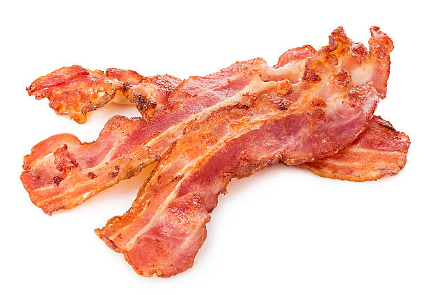

Baking bacon at 350 degrees F is the way to get crisp bacon without having to constantly turn it, watch over it, or get burnt by splatters of grease.
It "fries" up flat and doesn't curl, which looks great beside a breakfast plate of eggs, and makes BLT sandwiches much easier. Very nice when feeding a family or crowd
Preheat the oven to 350 degrees F (175 degrees C). Line a baking sheet with aluminum foil.
Arrange the bacon in a single layer on the prepared sheet with the edges touching or slightly overlapping.
Bake in the preheated oven to desired degree of doneness, 10 to 15 minutes. Remove bacon from the baking sheet with tongs or a fork, and drain on a paper towel-lined plate.